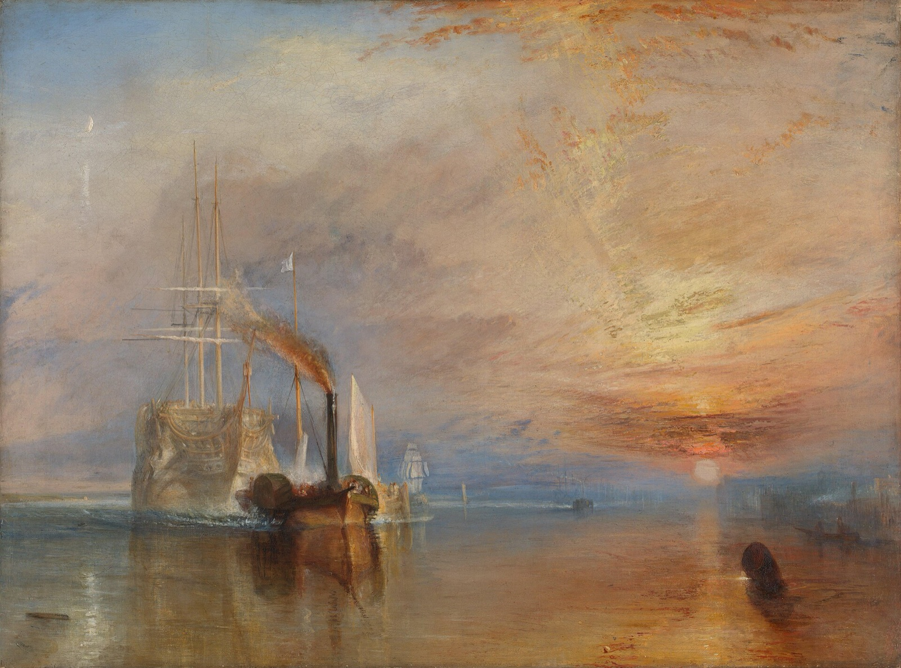

The Fighting Temeraire Explained: How Turner Rewrote a Ship's Last Day
Turner's best-loved painting records an event he almost certainly never saw, and nearly everything that makes it moving is invented. This is the story of what he changed, and why.

Within weeks of the Temeraire reaching the breaker's yard at Rotherhithe in September 1838, the shipbreaker's brother made a drawing of her tied up at the wharf. It shows an empty wooden shell: no masts, no rigging, no flag, no figurehead. Only her size marked her out from the other worn-out ships towed to the yards around London's docks.
Now look at Turner's picture. The same ship glides upriver with three tall masts, her hull glowing pale gold, under a sunset that sets the whole sky alight. The National Gallery says plainly that Turner "took liberties with the facts". Each of those liberties was a choice, and together they turn a scrapping job into a funeral.
A ship with one great day
The Temeraire was a 98-gun, three-decker warship, built from the wood of more than 5,000 oaks at Chatham and launched in 1798. She fought in only one battle, and it was the one that mattered. At Trafalgar on 21 October 1805, Nelson placed her directly behind his flagship, the Victory. When the French Redoutable had the Victory under heavy fire and close to boarding, the Temeraire fired a broadside into her while also engaging the Fougueux on her other side, and took both French ships as prizes.
Peace left her with nothing to do. From 1820 she was moored off Sheerness as a supply ship and did not move for eighteen years. In June 1838 the Admiralty ordered her sold, by which time she was worth only her timber. Before any naval ship was sold, it was stripped of whatever the navy could reuse: masts, yards, guns, anchors, stores. Then she went at auction, on 16 August, to John Beatson, a Rotherhithe shipbreaker, for £5,530. Two steam tugs dragged her the 50-odd miles up the Thames on 5 and 6 September.
Turner was very probably not there. Stories later had him watching from a Greenwich outing, or a boat in Blackwall Reach, or a steamer back from Margate. The National Gallery's catalogue calls these legends. He usually travelled abroad in August and September, and it is not even certain he was in England. The tow was not publicised; no other artist thought it worth painting. What reached him were a few news reports, one noting that she was the largest ship the Admiralty had ever sold for breaking up. He had painted her once before, as a glimpse at the edge of his Battle of Trafalgar in 1806. Now he gave her the nickname she kept ever after: the Fighting Temeraire.
Giving her back her masts
Start at the left of the canvas, with the ship. Turner shows her three lower masts standing, sails furled and partly rigged. The Gallery's catalogue calls this "a compromise which is moving, though untruthful". It let her keep her dignity while still looking powerless, drifting behind the tug and barely disturbing the water.
The image was so convincing that it rewrote history for a while. A naval history of 1904 claimed she really went to the breakers with her masts in, "just as" Turner painted her. A man whose father had served aboard had already written to the Gallery in 1878 to say the masts were gone before she left Sheerness, yet later catalogues still suggested she had been given temporary masts for the trip. It took the historian Eric Shanes, around 1988–90, to put the idea to rest.
Then there is her colour. The real ship was painted black and yellow. Turner washes her in pale gold and white, so she reads like a vision, already half gone. Look closely and there is very little detail: the curve of the bows, the anchor housings, a few dark strokes for empty gun ports.
The flag that isn't there
Look at the very front of the ship. A vertical spar that once braced the forward rigging hangs loose, its end broken. And the small flagstaff at the bow, where she had flown the Union flag through all her years in harbour, has gone. Once sold out of the navy, she could no longer fly it.
That missing flag is what Turner's exhibition text was about. For the Royal Academy in 1839 he adapted lines from Thomas Campbell's naval song "Ye Mariners of England", which praises a flag that "has braved, a thousand years, / The battle and the breeze". Turner bent it into an epitaph:
The flag which braved the battle and the breeze, No longer owns her.
On the tug's tall mast, meanwhile, flies a white commercial flag.
A funnel in the wrong place
Turner knew steamboats well; he had been riding them since the early 1820s. He knew the funnel sat in the middle with the mast in front of it. On his tug the funnel stands in front of the mast. That swap is what lets a long plume of sooty, fire-coloured smoke pour backwards through the old warship's rigging, the black-and-orange smudge that cuts across the left half of the picture.
People who took the painting literally laughed at the tug. When J. T. Willmore engraved the picture in 1845 he "corrected" it, shortening the funnel and moving it back, so that Turner's long plume became a short puff that looked more likely to set the masts on fire. According to an 1856 account cited by the Gallery, the change threw Turner into a "paroxysm of wrath". By the time the plate was reprinted in 1851, it had quietly been put back the way he painted it.
He simplified the convoy too. Two tugs made the journey; Turner gives the work to one, with another just visible far off.
There is a further surprise under the tug. An X-ray published in the Gallery's catalogue shows a large sail, on a much bigger scale than anything now visible, painted exactly where the tug's mast, rigging and funnel are now. Turner seems to have picked up a discarded canvas on which he had begun a big sailing boat, and painted the steam tug over it.
The sun in the east
Now cross to the right, into the sunset. A ship coming up the Thames towards London heads roughly west, so the setting sun could not have been behind her. Nobody seems to have minded until 1877, when the writer James Dafforne called it "a glaring error", while adding, generously, that the points of the compass "occupied no place in the artist's mind". The complaint set off a long, inconclusive correspondence in The Times, and the idea that Turner "got the sunset wrong" has never quite gone away.
The hour was wrong as well. Working from the 1838 tide tables, the historians Pieter van der Merwe and Bill Robson estimated she was probably tied up at Beatson's wharf before 3pm, hours before sunset. The sunset is there because the story needs it, and the first reviewers read it at once. The Morning Chronicle wrote on 7 May 1839 that the horizon "poetically intimates that the sun of the Temeraire is setting in glory".
In a gallery you can see how hard Turner worked that sky: the paint on the clouds is so thick in places that it stands up from the canvas, and because the picture has not been cleaned or varnished since it arrived at the Gallery in 1856, those effects are, in the catalogue's words, "unusually intact". Drop your eye to the dark buoy in the lower right, which anchors all that colour to the water. Then go back to the top left for the last detail, a thin crescent moon rising as the sun goes down. Turner had long liked showing the two together. Many viewers read it as one age giving way to the next, though the Gallery's catalogue points out that steamboats were hardly new in 1838.
"My Darling"
The painting was a success at once. Thackeray called the tug "a little, spiteful, diabolical steamer" and the whole picture a kind of national ode. The Gallery thinks Turner's own feelings about steam were more mixed. He travelled by steamer and painted modern life often, and his sunset lights the tug as well as the warship.
What is clear is that he would not let the picture go. In a small sketchbook of about 1845 he drafted a refusal to lend it, saying no money or favour would induce him "to lend my Darling again". In about 1848 the American collector James Lenox reputedly offered £5,000 for it, and then a blank cheque. Turner said no. The painter C. R. Leslie recorded that he turned down large offers because he meant to leave it to the nation. Until then it hung in his own gallery in Queen Anne Street, where one visitor remembered "the glorious Temeraire lighting up another corner". It arrived at the National Gallery with the Turner Bequest, among the first of those pictures to go on show.
Living with it
Most people meet The Fighting Temeraire for a minute in a crowded room, or as a postcard where the moon, the broken spar and the second tug disappear. It rewards slower looking. At roughly 1.35 to 1 it is a little squarer than a 16:10 Mac screen, so artbip shows the whole canvas, nothing cropped, with slim bands at the sides filled by a blurred version of the picture or a colour from its palette. Leave it up for a few days and you start to find things: the empty flagstaff one morning, the buried logic of the funnel the next. The longer note in the app walks through the changes Turner made.
Sources
- The Fighting Temeraire, Joseph Mallord William Turner (NG524), National Gallery, London
- The Fighting Temeraire, in Judy Egerton, National Gallery Catalogues: The British Paintings (2000; online version 3, 2025), National Gallery, London